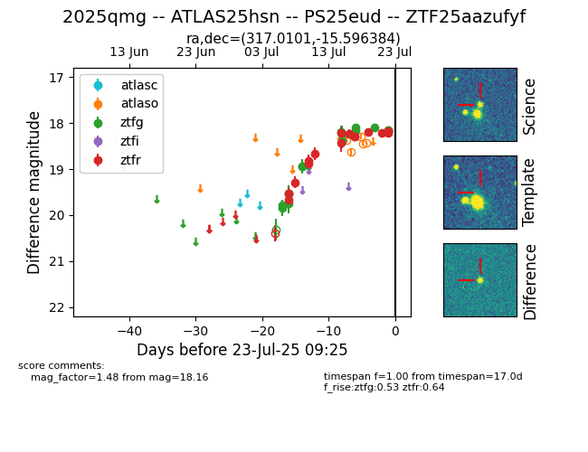

Target ZTF25aazufyf at 2025-07-23 12:37, see:
FINK: fink-portal.org/ZTF25aazufyf
Lasair: lasair-ztf.lsst.ac.uk/objects/ZTF25aazufyf
ALeRCE: alerce.online/object/ZTF25aazufyf
TNS: wis-tns.org/object/2025qmg
YSE: ziggy.ucolick.org/yse/transient_detail/2025qmg
alt names
ZTF25aazufyf (ztf,fink)
2025qmg (tns,yse)
PS25eud (panstarrs)
ATLAS25hsn (atlas)
coordinates:
equatorial (ra, dec) = (317.0101,-15.59638)
galactic (l, b) = (33.4544,-37.14340)
photometry
last atlaso=18.43, ztfg=18.16, ztfr=18.17
5 atlaso, 16 ztfg, 15 ztfr detections
